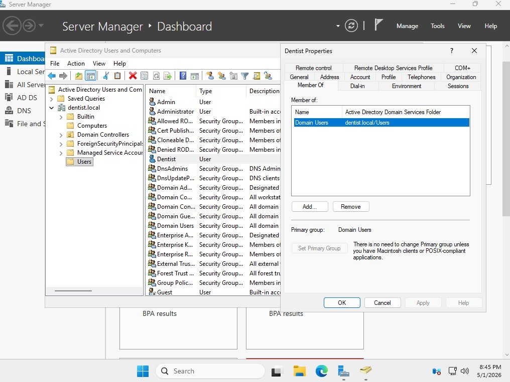
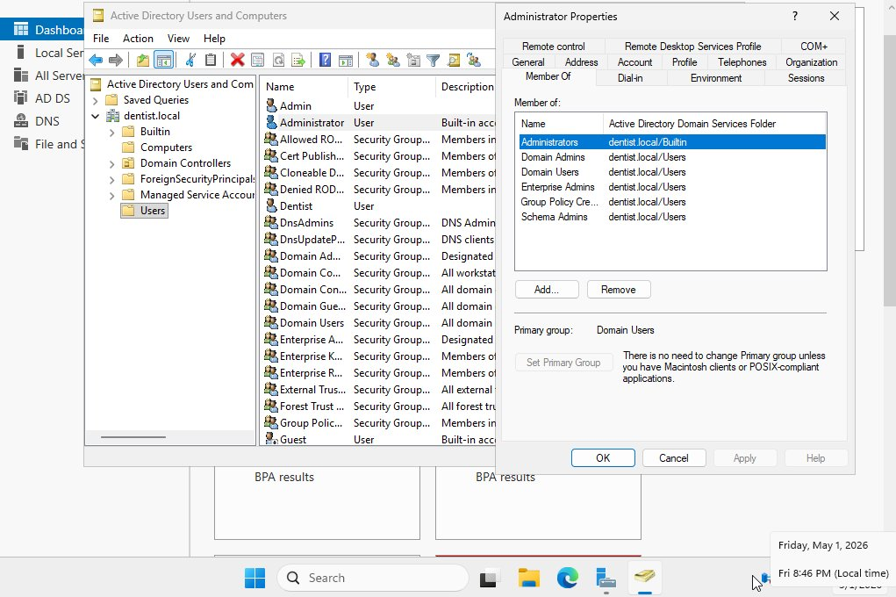
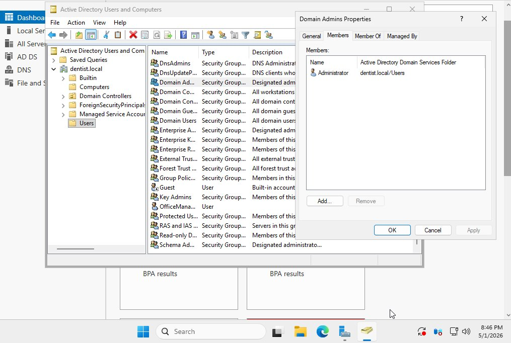
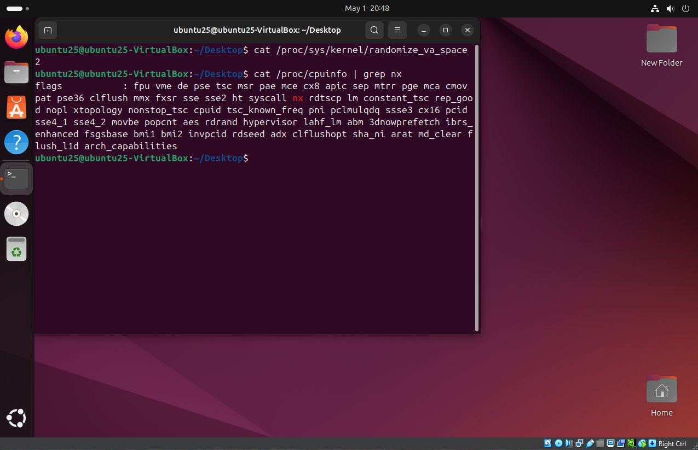
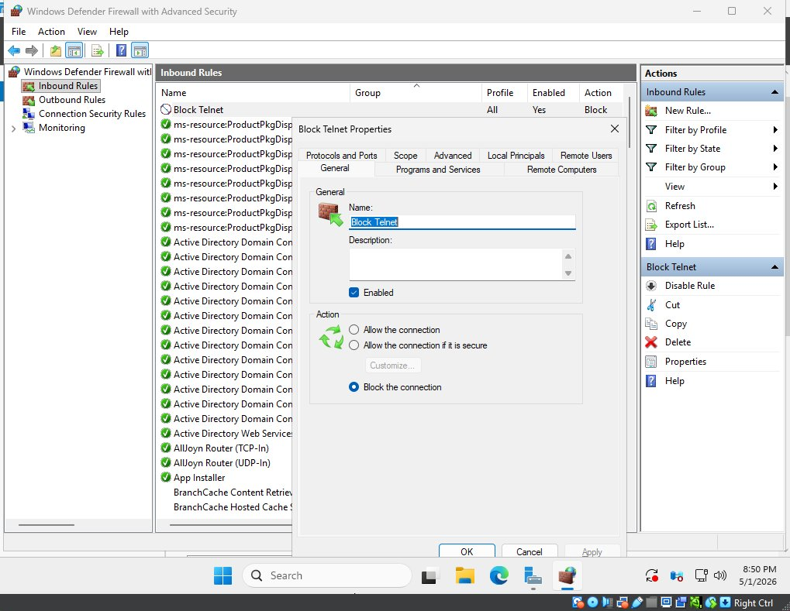
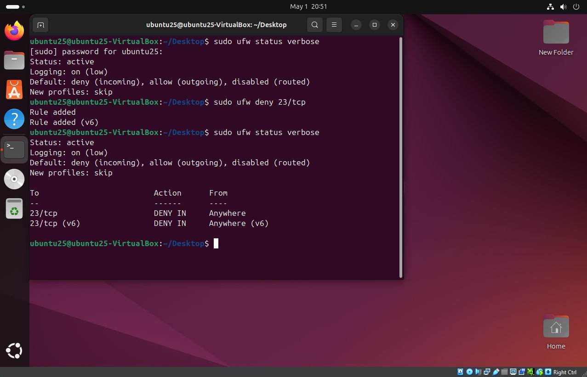
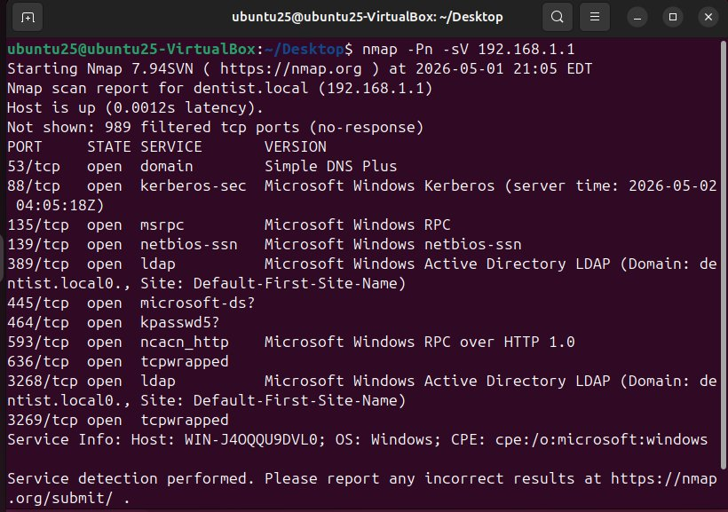
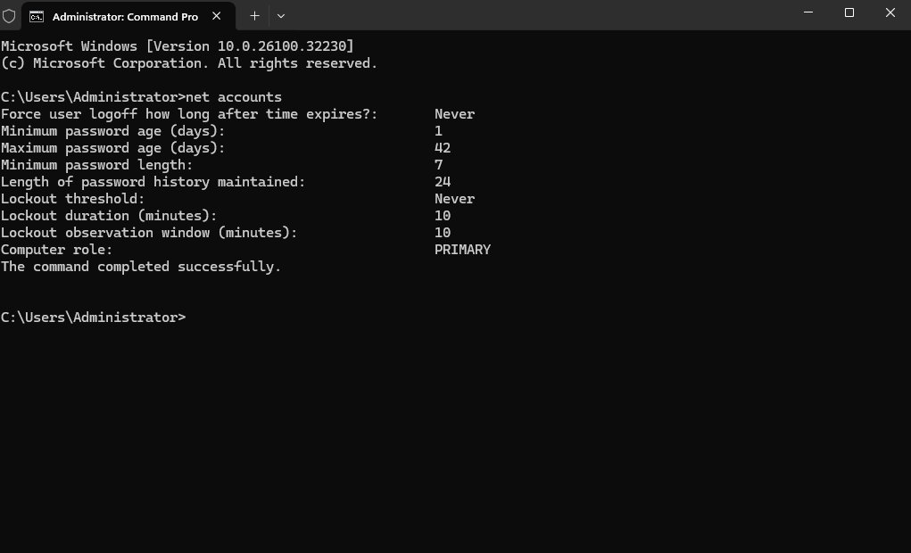
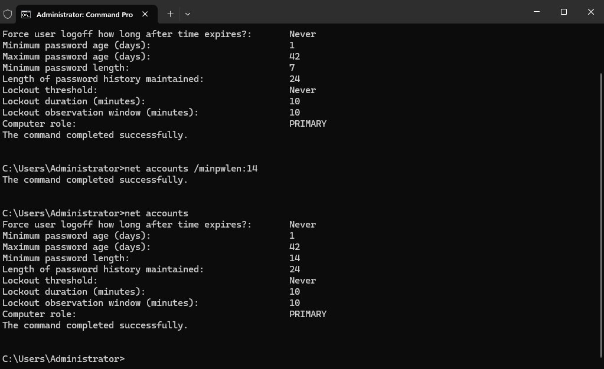
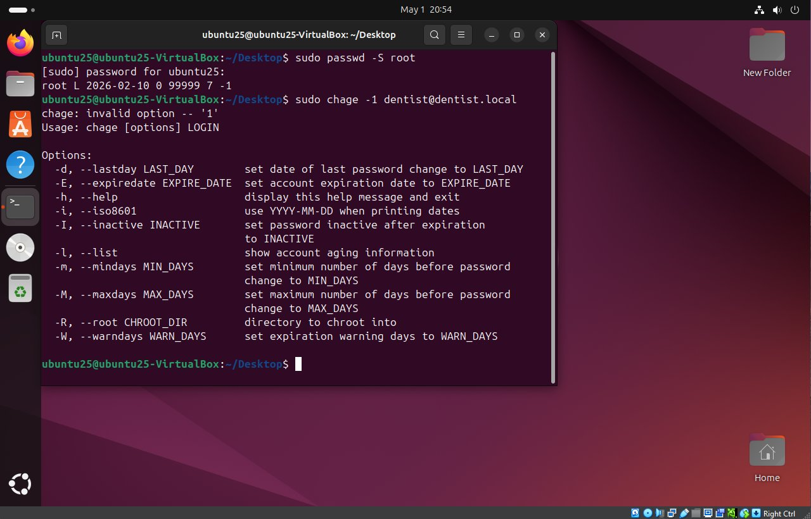

SLOs / Independent Work Documents
Independent Work Portfolio
| Category | Details |
|---|---|
| Student | Maxwell King |
| Course | CIS 3367: Architecting Operating System Security |
| Assignment | Independent Work Portfolio (Student Learning Objectives) |
| Professor | Thomas E. Moore-Pizon |
| Term | Spring 2026 |
About This Document
This document supplements the CIS 3367 Portfolio Lab Notebook with self-guided exercises performed in the course VM environment. Each section covers one of the five Student Learning Outcomes and includes screenshots taken during the exercise with a plain-language explanation of what the screenshot shows and why it satisfies the learning objective. All work was performed on the local VirtualBox environment used throughout the semester: SERVER25 (Windows Server 2025 Domain Controller, 192.168.1.1) and UBUNTU25 (Ubuntu 24.04.4 LTS, 192.168.1.2).
Independent Work
IW-1: Least Privilege in Active Directory
| Learning Objective: Identify and apply information security foundation concepts to include least privilege, compare and contrast security and integrity models, and the risks those concepts seek to reduce. |
|---|
Least privilege is the security principle that every user should only have access to what they need to do their job, nothing more. The best way to show this is to compare what a regular user can access versus what an administrator can access, and see exactly where the boundary is drawn.
In this exercise, I used Active Directory Users and Computers on SERVER25 to look at the group memberships of the Dentist account (a standard domain user) and the Administrator account, then confirmed who is actually inside the Domain Admins group.
Screenshot 1: Standard User Has Minimal Access
This screenshot shows the Member Of tab for the Dentist account. It belongs to one group: Domain Users. That group is what every domain account gets by default. It lets the account log in and access shared resources, but gives no ability to make changes to the domain, install software system-wide, or access administrative tools. This is least privilege in practice. The account has exactly what a dentist employee needs and nothing else.

Figure IW-1-1: Dentist account properties showing Member Of tab with only Domain Users, confirming a standard least-privilege account
Screenshot 2: Administrator Has Elevated Access
This screenshot shows the Member Of tab for the Administrator account. It belongs to six groups including Domain Admins, Enterprise Admins, and Schema Admins. Each of these grants a different level of control: Domain Admins can manage everything in the domain, Enterprise Admins can manage the entire forest, and Schema Admins can change the structure of Active Directory itself. This account has full control, which is exactly why it should only be used when absolutely necessary. Regular users should never have it.

Figure IW-1-2: Administrator account properties showing membership in Domain Admins, Enterprise Admins, Schema Admins, and other privileged groups
Screenshot 3: The Enforcement Boundary
This screenshot shows the Members tab of the Domain Admins group itself. Only one account is in it: Administrator. The three regular domain accounts (Dentist, OfficeManager, and Admin) aren't on the list. That confirms the elevated access is tightly controlled. If any of those regular accounts were ever compromised, the attacker would only inherit standard user permissions, with no ability to make domain-wide changes or escalate further. That containment is the whole point of least privilege.

Figure IW-1-3: Domain Admins group Members tab showing only Administrator, confirming regular users have no path to administrative privileges
IW-2: Memory Corruption Countermeasures
| Learning Objective: Understand buffer overflow and similar memory corruption exploits, why they exist, and identify at least two common operating system security countermeasures to memory corruption exploits. |
|---|
A buffer overflow happens when a program writes more data into a section of memory than it was designed to hold. The extra data spills over into adjacent memory, which an attacker can exploit to inject malicious code or take control of the program. Modern operating systems have built-in defenses to make this much harder. This exercise verified two of those defenses on UBUNTU25.
Screenshot: ASLR and NX Bit Verified
This screenshot shows two commands run back to back in the Ubuntu terminal.
The first command checks the value of randomize_va_space, which controls Address Space Layout Randomization (ASLR). ASLR works by randomizing where programs load in memory every time they run. Without ASLR, an attacker can predict exactly where their injected code will land and jump to it. With ASLR enabled at level 2 (the value shown here), those memory addresses change every launch, so the attacker's hardcoded addresses become useless.
The second command checks the CPU flags listed in /proc/cpuinfo and looks for the nx flag. NX stands for No-Execute. It is a hardware-level protection that marks memory regions as either writable or executable, but never both at the same time. The stack, the memory region most commonly targeted in buffer overflow attacks, is writable data memory. With NX enabled, the CPU refuses to execute anything stored there, which stops shellcode injection even if the buffer was successfully overflowed.

Figure IW-2-1: Ubuntu terminal confirming ASLR is fully enabled (randomize_va_space = 2) and the NX bit is present in CPU flags, demonstrating two active OS-level countermeasures against memory corruption exploits
Both countermeasures are confirmed active on the course VM. Together they address the SLO requirement to identify at least two common OS security countermeasures to memory corruption exploits.
IW-3: Firewall Rules on Windows and Linux
| Learning Objective: Be able to implement and verify ingress and egress firewall rules on Windows and Linux systems to provide layered defense and enforce least privilege/least access. |
|---|
A firewall controls what network traffic is allowed into and out of a system. Blocking unnecessary ports is a basic hardening step. If a service doesn't need to be reachable, it shouldn't be. Telnet runs on TCP port 23 and sends all data including passwords in plaintext, making it a security liability. This exercise blocked Telnet inbound on both SERVER25 and UBUNTU25 to show the same concept applied across both operating systems.
Screenshot 1: Windows Firewall Block Rule
This screenshot shows the Windows Defender Firewall with Advanced Security on SERVER25 with a new inbound rule called Block Telnet at the top of the list. The rule targets TCP port 23, is set to Block the connection, is enabled, and applies to all network profiles. The properties panel on the right confirms everything is configured correctly. Any incoming Telnet connection attempt to this server will now be dropped at the firewall before it reaches the operating system.

Figure IW-3-1: Windows Defender Firewall showing the Block Telnet inbound rule active on TCP port 23 across all profiles
Screenshot 2: Linux UFW Block Rule
This screenshot shows the Ubuntu terminal with three commands. The first, sudo ufw status verbose, shows the firewall is already active before the rule is added. The second, sudo ufw deny 23/tcp, adds the deny rule. UFW confirms "Rule added" for both IPv4 and IPv6. The third status check at the bottom shows the result: 23/tcp now shows DENY IN Anywhere for both address families, confirming the rule is live.

Figure IW-3-2: Ubuntu terminal showing the ufw deny 23/tcp rule added and verified in status output for both IPv4 and IPv6
Blocking the same port on both the Windows server and the Linux machine is a direct example of layered defense. Even if one system's firewall were bypassed or misconfigured, the other would still block the traffic. Both screenshots show the rule implemented and confirmed, satisfying the SLO requirement for firewall configuration on both platforms.
IW-4: Network Scanning with Nmap
| Learning Objective: Demonstrate ability to perform network and vulnerability assessment scans. |
|---|
Before you can secure a network, you need to know what is actually running on it. Nmap is the standard tool for this. It scans a target system and reports which ports are open and what services are running on them. Security professionals use Nmap to audit their own environments; attackers use it to find targets. This exercise ran a service version scan from UBUNTU25 against SERVER25.
Screenshot: Nmap Scan Results
This screenshot shows the results of running nmap -Pn -sV 192.168.1.1 from the Ubuntu terminal. The -Pn flag tells Nmap to skip its usual ping check and scan regardless, which is necessary here because Windows Defender Firewall on SERVER25 blocks ICMP ping requests by default. The -sV flag enables service version detection, meaning Nmap tries to identify exactly what software is running on each open port rather than just noting that the port is open.
The results show 11 open ports. Looking at what those ports are tells a clear story about the server's role: port 53 is DNS, port 88 is Kerberos (the authentication protocol Active Directory uses), ports 389 and 3268 are LDAP (the directory service), port 135 is Microsoft RPC, and port 139 is NetBIOS. Every one of those is a standard port for a Windows domain controller. The last line, Service Info, even confirms the OS as Windows and identifies the machine's hostname. This is exactly the kind of information a vulnerability assessment produces: a clear picture of what's running so you know what needs to be reviewed and secured.

Figure IW-4-1: Nmap -Pn -sV scan from UBUNTU25 against SERVER25 (192.168.1.1) showing 11 open ports with identified services, fingerprinting the host as a Windows domain controller running DNS, Kerberos, LDAP, and RPC
IW-5: OS Hardening, Password Policy and Account Security
| Learning Objective: Demonstrate ability to harden Windows and Linux operating systems. |
|---|
Hardening an OS means going through its configuration and tightening anything that is set to a weak default. Out of the box, most operating systems are configured for convenience, not security. Password policy is one of the first things to address. A weak password requirement is one of the most common ways systems get compromised.
Screenshot 1: Windows Password Policy Before Hardening
This screenshot shows the output of running net accounts on SERVER25. This command prints the current domain-wide password policy. The two values that stand out as problems are Minimum password length: 7 and Lockout threshold: Never. Seven characters is not enough to resist a brute-force attack against captured password hashes. A lockout threshold of Never means there's no limit to how many times someone can try to guess a password. An attacker could attempt millions of combinations with no consequence.

Figure IW-5-1: net accounts baseline output showing minimum password length of 7 characters and a lockout threshold of Never, two weak default settings
Screenshot 2: Windows Password Policy After Hardening
This screenshot shows the result after running net accounts /minpwlen:14 to increase the minimum password length, followed by net accounts again to confirm the change. The Minimum password length line now reads 14. A 14-character minimum makes brute-force attacks significantly more expensive. The number of possible combinations grows exponentially with each additional character. This aligns with current NIST guidance, which recommends longer passwords over arbitrary complexity requirements.

Figure IW-5-2: net accounts after applying /minpwlen:14, confirming the minimum password length has been updated from 7 to 14 characters
Screenshot 3: Ubuntu Root Account Locked
This screenshot shows the output of sudo passwd -S root on UBUNTU25. The -S flag prints the status of an account. The output "root L" means the root account is Locked. Ubuntu ships with root locked by default, which is a deliberate security decision. Instead of logging in directly as root, users go through sudo, which requires them to authenticate with their own password and be explicitly listed as an authorized sudoer. This means every privileged action requires authentication, is tied to a specific user account, and is logged, which is far more accountable than a shared root login.

Figure IW-5-3: Ubuntu terminal showing passwd -S root returning "root L", confirming the root account is locked and direct root login is disabled
Across both systems, these exercises demonstrate core OS hardening practices: strengthening the domain password policy on the Windows server and confirming the root account is secured on Linux. Both changes reduce the attack surface of the environment in straightforward, verifiable ways.
References
Anthropic. (2026). Claude (Version claude-sonnet-4-6) [Large language model]. Used as an AI assistant for document generation, concept explanation, and general research guidance. https://www.anthropic.com
Microsoft Corporation. (2024). Active Directory Domain Services overview. Microsoft Learn. https://learn.microsoft.com/en-us/windows-server/identity/ad-ds/get-started/virtual-dc/active-directory-domain-services-overview
Microsoft Corporation. (2024). net accounts. Microsoft Learn. https://learn.microsoft.com/en-us/windows-server/administration/windows-commands/net-accounts
Microsoft Corporation. (2024). Windows Defender Firewall with Advanced Security. Microsoft Learn. https://learn.microsoft.com/en-us/windows/security/operating-system-security/network-security/windows-firewall/windows-firewall-with-advanced-security
National Institute of Standards and Technology. (2020). Digital identity guidelines: Authentication and lifecycle management (NIST Special Publication 800-63B). U.S. Department of Commerce. https://pages.nist.gov/800-63-3/sp800-63b.html
Nmap Project. (2024). Nmap: The network mapper: reference guide. https://nmap.org/book/man.html
The Linux Kernel Archives. (2024). kernel.randomize_va_space. https://www.kernel.org/doc/html/latest/admin-guide/sysctl/kernel.html
Ubuntu Documentation. (2024). UFW: Uncomplicated Firewall. Ubuntu Community Help Wiki. https://help.ubuntu.com/community/UFW
Original file: Independent Work Student Learning Objectives on Class VMs.docx (Word .docx)